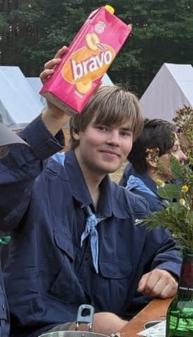
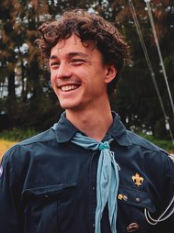
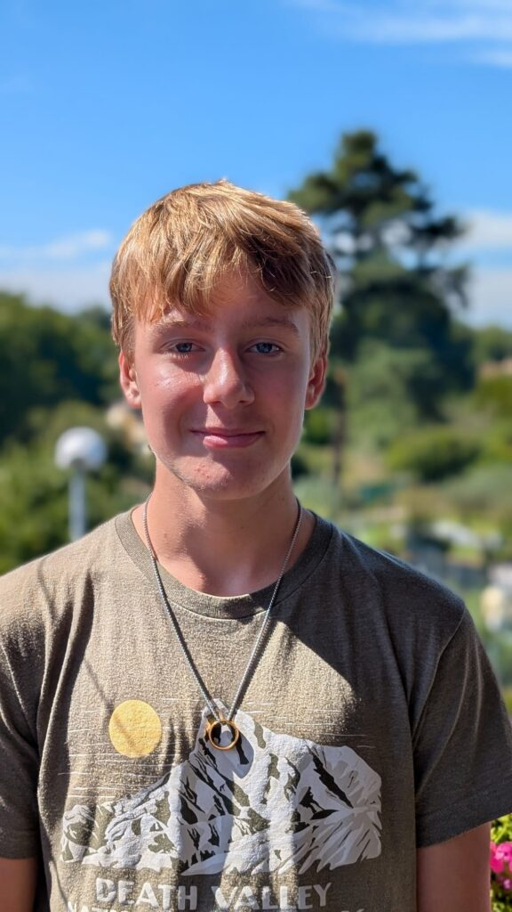
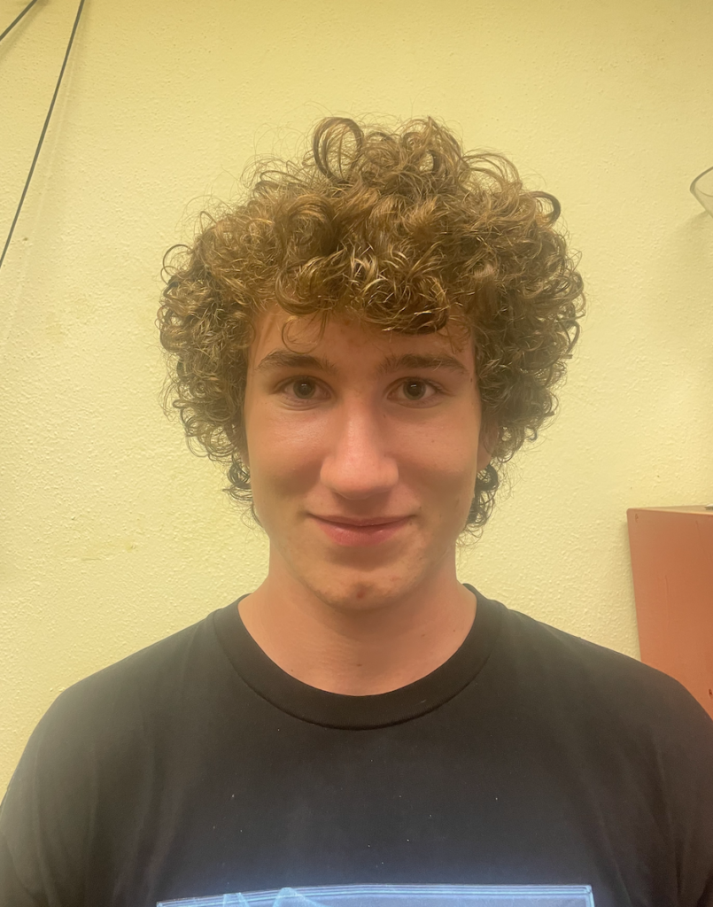
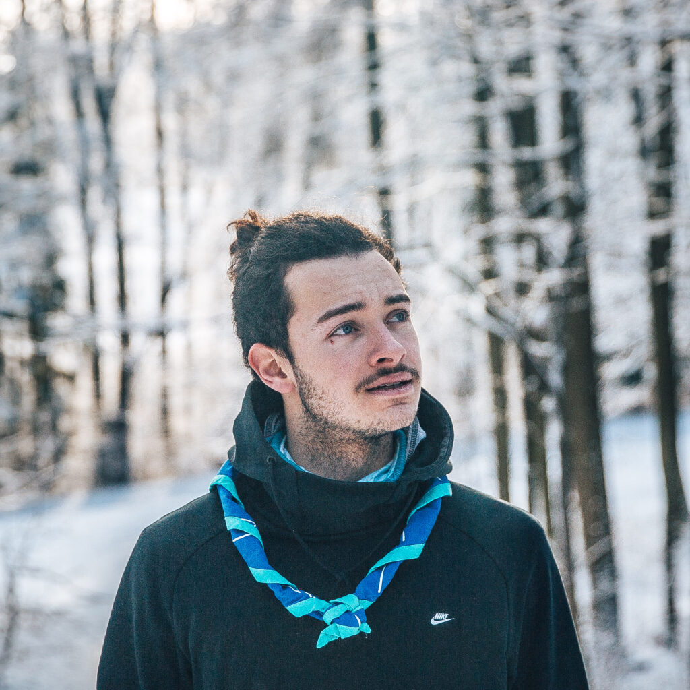
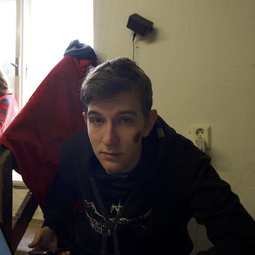

Hopík
Martin Hájek
kapitán oddílu
Knedlík
David Hacker
důstojník
Čáp
Jáchym Řehounek
garant čtvrteční schůzky
Myšák
Matěj Bajgar
garant středeční schůzky
Kraken
Jan Bartík
lodivod
Sponzor
Vít Sattran
lodivod
Rusalka
Leontýna Maurerová
lodivod
Achilles
Hugo Bajgar
lodivod
Sisi
Christián Maurer
lodivod
Bobr
Šimon Rucki
lodivod

Medůza
Filip Vácha
lodivod
Tulák
Ondřej Čapek
lodivod
Ríša
Richard Kašpar
lodivod

Trasher
Adam Klabouch
lodivod
Jerhi
Matěj Jerhot
lodivod
Venda
Václav Ludvík
lodivod
Vodník
Vít Veltrubský
1/2 důstojníka bárky
Škarpák
František Bajgar
1/2. důstojníka bárky
Werran
Max Rosenthaler
garant středeční schůzky
Fanda krátký
František Kratochvíl
garant čtvrteční schůzky
Sekáč
Ondřej Ošmera
lodivod

Střípek
Jakub Nejedlý
lodivod
Davído
David Ujčík
lodivod
Valda
Valdemar Vokálek
lodivod
Harry
Antonín Malec
lodivod
Kecal
Ondřej Polák
lodivod

Vítek
Vítězslav Černý
Lodivod
Pampárek
Jaroslav Jílek
lodivod
Vokoun
Kryštof Klabouch
lodivod

Šaman
Mag. iur. Christopher Alexander De La Cruz
Lodivod • Manažer tabulkových systémů

Majkl
Michal Čutka
lodivod
Troll
Ondřej Šustr
lodivod
Tomášek
Tomáš Tříska
lodivod
Dráček
MUDr. Jaromír Pokorný
lodivod